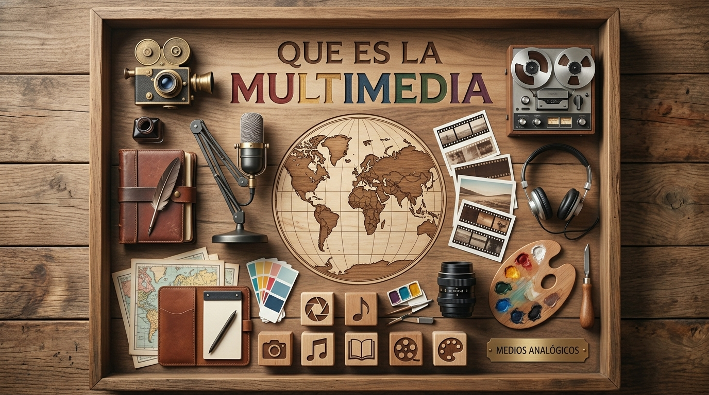
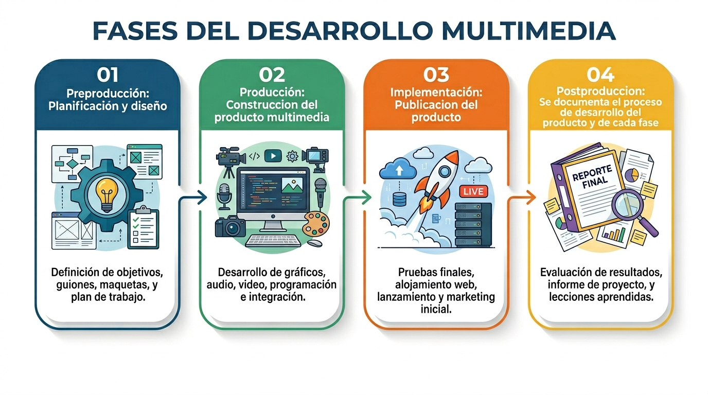

Explora los conceptos esenciales de la ingeniería multimedia: qué es, sus tipos, el rol del profesional y las fases de desarrollo de productos digitales.
Fundamentos
La multimedia integra múltiples formas de comunicación digital en un solo entorno interactivo, transformando cómo aprendemos, nos entretenemos y nos comunicamos.

La multimedia es la integración de dos o más medios de comunicación —texto, imagen, audio, video y animación— controlados de forma interactiva por un sistema informático. A diferencia de los medios tradicionales, la multimedia permite que el usuario participe activamente en la experiencia, navegando, eligiendo y creando.
Clasificación
El ingeniero multimedia puede desarrollar distintos tipos de productos según el objetivo comunicativo, el público y el canal de distribución.
Profesión
El ingeniero multimedia diseña, produce e implementa productos digitales que integran múltiples medios con propósito comunicativo, educativo o de entretenimiento.
La Ingeniería Multimedia es una disciplina que combina conocimientos de ingeniería de software, diseño audiovisual, comunicación y pedagogía para crear productos digitales interactivos. Su campo de acción abarca desde aplicaciones educativas hasta videojuegos, simuladores y plataformas web.
En la UNAD, el programa forma profesionales capaces de planear, diseñar, desarrollar y evaluar contenidos multimedia que respondan a necesidades reales de comunicación en la sociedad del conocimiento.
Algunos de los roles que puede desempeñar un ingeniero multimedia:
Saza, I. D. (2020). Definición y Características de la Multimedia [Video]. UNAD.
Proceso
Todo producto multimedia sigue un ciclo de vida estructurado. Haz clic en cada fase para conocer sus actividades y entregables.

Reflexión
Ser un ingeniero multimedia va más allá de solo saber usar software de diseño o conocer un lenguaje de programación. Es ser un arquitecto de experiencias interactivas.
Implica entender las necesidades del usuario, estructurar la información de manera lógica y atractiva, y unir disciplinas creativas y técnicas para resolver problemas. Un profesional en esta área es el puente entre el diseño artístico y la funcionalidad del código.
Además, está en constante aprendizaje, siendo capaz de adaptarse a nuevas tecnologías (como realidad aumentada, inteligencia artificial o motores web avanzados) para crear soluciones que educan, entretienen y mejoran la comunicación digital de la sociedad.
Créditos
Proyecto desarrollado como componente práctico del curso Introducción a la Ingeniería Multimedia de la UNAD, periodo 2026.
Estudiante · Autora del proyecto
Ingeniería Multimedia · Universidad Nacional Abierta y a Distancia — UNAD
El siguiente clip de audio es una introducción narrada a los fundamentos del ingeniero multimedia, incluido como uno de los formatos multimedia requeridos por la guía de actividades.